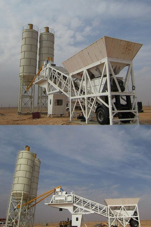

As a leading commercial Houston concrete contractor, TEXAN Concrete Ready Mix takes pride in delivering the highest quality and most effective solutions for large-scale projects throughout the metropolitan area. Our Houston ready mix concrete technicians can provide you with the custom formulations needed to provide support for building structures and to offer the highest durability for sidewalks, parking lots and other concrete installations. By working with us, you can be sure of the best possible results and the on-time delivery your business needs to succeed in the competitive marketplace.
At TEXAN Concrete Ready Mix, we use Alkon Spectrum 6 systems to ensure absolute precision when formulating your concrete. Our team selects ASTM-approved aggregates and SEMA-approved add mixes in exact proportions with water to create the best solutions for a wide range of concrete applications. This attention to detail and adherence to your specifications can provide you with greater confidence throughout the construction process.

TEXAN Concrete Ready Mix is an established Houston concrete supply company with many years of experience in the industry. We can provide you with the right solutions for an array of building projects and commercial construction tasks:
By working with our team of concrete experts, we can ensure that you receive the right concrete formulations for all aspects of your building project and that you achieve your objectives on schedule.
Our Houston cement mixing and concrete formulating professionals can help you manage all aspects of your large-scale construction projects. We have the experience and the expertise needed to advise you on the right formulations and products for all your Houston ready mix concrete needs. From start to finish, TEXAN Concrete Ready Mix can deliver the right solutions for your construction company.
If you need expert support for your commercial construction project, TEXAN Concrete Ready Mix can provide the help you need to succeed. We have a proven track record of success in major infrastructure and commercial construction projects and can deliver the best solutions for your building needs. Call us today at 713-255-3333 to learn more about our lineup of products and services. Our team of talented concrete technicians will be happy to work with you.